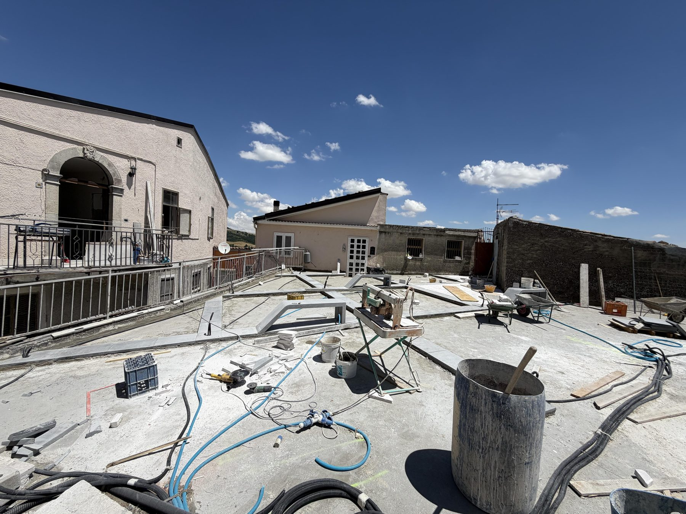
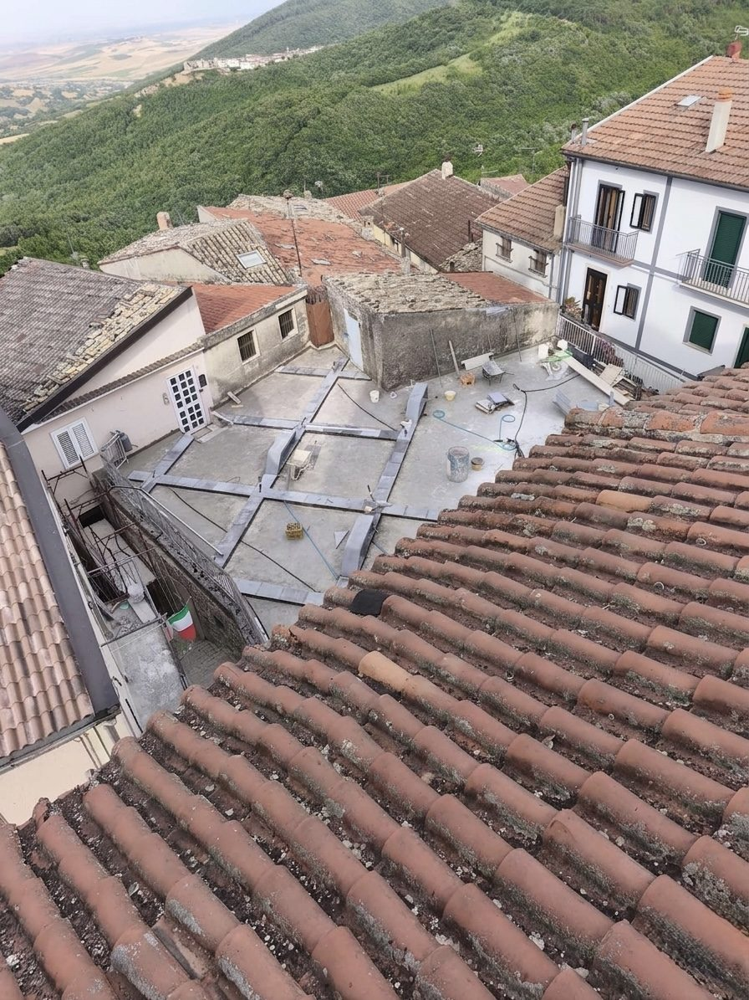
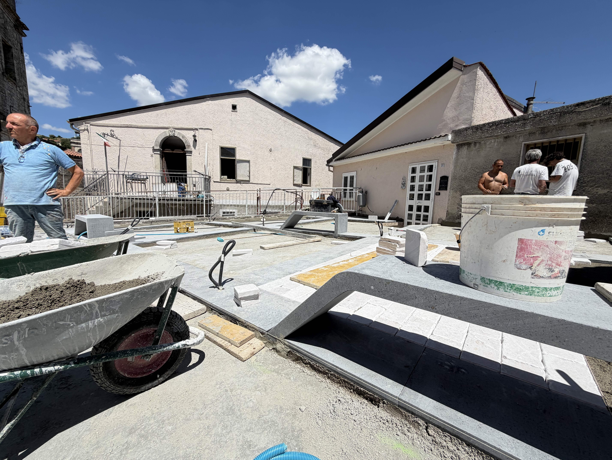
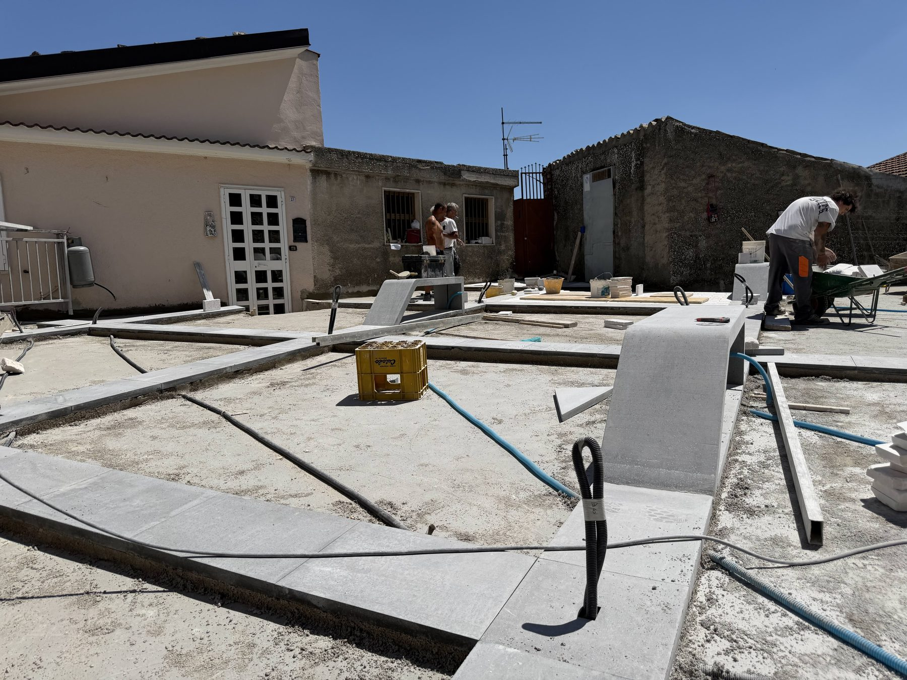
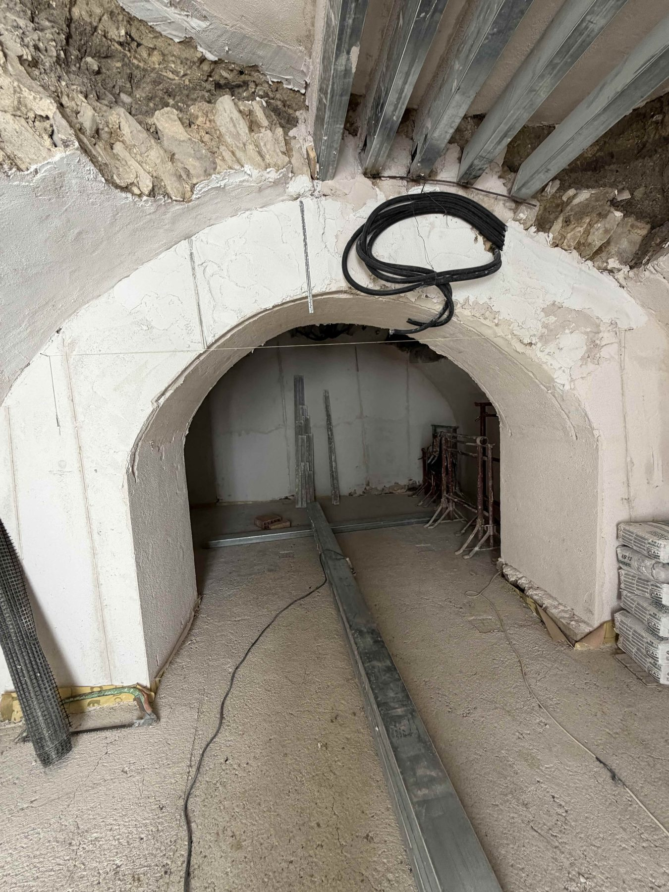
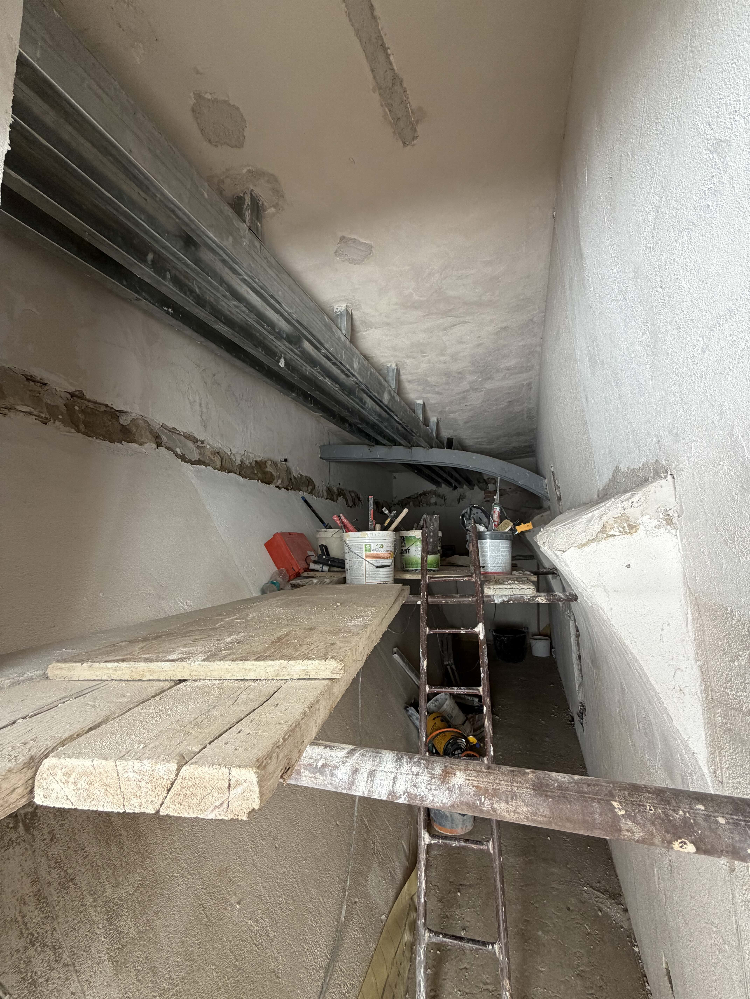

la posa / inizia
faeto, giugno 2026. la pietra arriva in cantiere e l'orditura in basalto grigio comincia a prendere corpo sulla piazza. la prima volta che il progetto lascia i fogli.

ci sono giornate di cantiere in cui qualcosa cambia davvero. fino a ieri la piazza era ancora un piano di calcestruzzo, strisce di gesso, fili tesi. oggi i primi listoni di basalto grigio sono a terra e l'asse della chiesa — quello stesso asse che ha guidato ogni scelta di progetto — è finalmente leggibile nello spazio reale.
l'orditura e la logica della pietra
la pavimentazione avanza per settori. il basalto grigio che segue l'asse prospettico della chiesa viene posto per primo, come traccia da cui tutto il resto si orienta. la pietra calcarea chiara, più diffusa, riempirà i campi tra le fasce. il contrasto cromatico che in progetto sembrava una scelta compositiva si rivela, a terra, qualcosa di più preciso: una grammatica spaziale, un sistema di riferimento visivo che riconosce la chiesa come punto fisso del borgo.
dall'alto — lo scatto è stato fatto dal campanile della chiesa madre — la geometria dell'insieme è già leggibile. l'orditura attraversa la piazza come un sistema di coordinate posato sulla topografia medievale. è la chiesa stessa, dalla sua quota, a mostrare come il progetto si sia orientato intorno a lei.


il disegno torna sulla piazza. non più su carta — su pietra, con le stesse misure e gli stessi materiali. / quello che non cambia è il principio: l'asse della chiesa come riferimento di tutto. — note di cantiere, giugno 2026
la prima seduta / il pavimento che si solleva
la prima seduta monolitica è già parzialmente in opera. il blocco in basalto grigio — stesso materiale dell'orditura — è esattamente com'era sul foglio: 180 cm per 40, altezza 45. eppure vederlo a terra, accanto alle fasce già posate, cambia la percezione. non è un elemento aggiunto: è la pavimentazione che si solleva. la coerenza materica tiene.
questa era la condizione di progetto che ci premeva di più: che la seduta non si leggesse come arredo urbano posato sopra la piazza, ma come estensione tettonica di essa. la pietra si dimostra coerente — stesso grigio, stessa texture, stesso peso.

gli ipogei / sotto la piazza
sotto la piazza il cantiere ha un altro ritmo. l'arco d'ingresso al primo ipogeo è stato restaurato, l'intonaco a calce già applicato sulle murature. le travi in acciaio — gli arcarecci che sostituiscono le porzioni di volta crollata — sono posizionati. lo spazio che ospiterà la narrazione franco-provenzale comincia ad avere una forma definita: raccolto, basso, orientato. un luogo che chiede attenzione.
l'acciaio scatolato corre lungo la linea della volta, seguendone la curva dove sopravvive, colmando dove manca. è un inserimento contemporaneo che si legge come tale, senza fingere di essere muratura storica. l'intonaco a calce sulle pareti mostra già il suo colore: un bianco caldo che assorbe la poca luce che scende dall'apertura d'accesso.
la prossima fase sarà la chiusura della posa sulla superficie principale. poi le sedute una per una, fino alla composizione completa. nel frattempo, sotto, il lavoro negli ipogei continua su un calendario separato.

